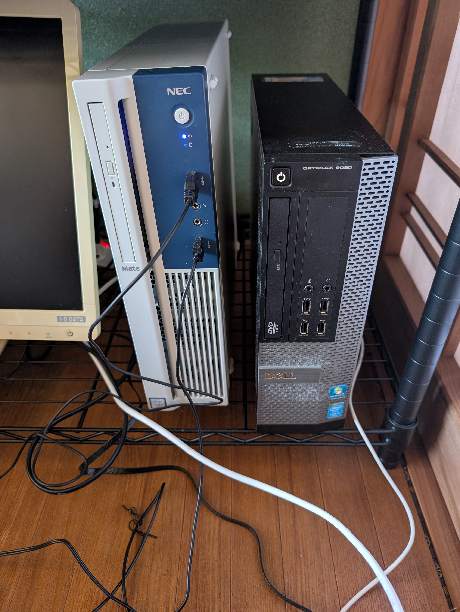

プロフィール
熊本県に住んでいるガジェットオタク。
主にパソコン(自作ジャンク問わず)、スマホ集め、オーディオ、AIなどに興味がある。自分で作成したアプリをgithubにて公開中。
推しは原神のノエルと、ブルアカのアロプラ
やっているゲームはマイクラ、miside、maimai、ポラリスコード (最近はもうほとんどしてないが)
音楽はハードコアを主に聞いている。S3RL、REMZCORE、ilyhiryuなど。happy hardcore frenchcore jumpstylecoreが好き。
布陣情報
スマホ編
- メイン Pixel8Pro (LineageOS edition)、iPhone15Pro、zenfone11ultra
- サブ iPhone11、Galaxy Z Fold 3 5G、iPhone SE3 64gb
- レアなやつ vivo nex 3
タブレット
- メイン OPPO Pad 2 iPad mini 6 256gb
- サブ iPadPro12.9 1st 256gb
- HUAWEI matepad11.5
パソコン編
メイン (自作)
- cpu i3 12100f
- gpu radeon rx6400lp
- ram 28gb
- ssd 1tb
- hdd 1tb×2
- mb b660mpro rs
- wifi 6e and bluetooth
サブ
- nec mateベース
- cpu i7 6700
- gpu geforce gt710
- ram 16gb
- hdd 500gb
- os win10pro and ubuntu
サブ (ノート)
- chuwi freebook (n5100モデル)

鯖 (地震監視用 & discord bot稼働用)
- cpu i5 4590
- ram 16gb
- ssd 128gb
- win10pro
オリジナルキャラクターについて
殺伐とした終末世界で生きているという設定があったりする
妹の方しか設定が固まってないがダウナー系の少女
妹メイン
リンク集
私のディスコードサーバーはこちら
加入者お待ちしております
Twitter編
- メイン垢 @soyaakinohara3